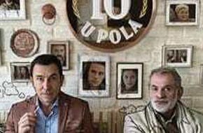
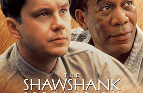

Filmovi u 2021
SF ostvarenje
Filmska adaptacija naučnofantastičnog romana Dina Frenka Herberta jedan je od najvećih bioskopskih hitova godine. Njen reditelj, Kanađanin Deni Vilnev, na veliko platno je preneo priču iz prve više...
Filmska adaptacija naučnofantastičnog romana Dina Frenka Herberta jedan je od najvećih bioskopskih hitova godine. Njen reditelj, Kanađanin Deni Vilnev, na veliko platno je preneo priču iz prve više...

Radnja filma događa se u Sarajevu, u maju ove godine. Baščaršija pokušava da se oporavi od duge i teške pandemijske godine. Kada jedno jutro u Enesovu ćevabdžinicu uđe Zagrepčanka koja kaže da je došla da pojede "najbolje ćevape u Sarajevu", više...

Bekstvo iz Šošenka (engl. The Shawshank Redemption) je američki drama film iz 1994. godine reditelja i scenariste Frenka Darabonta snimljen po romanu Rita Hejvort i bekstvo iz Šošenka autora Stivena Kinga, dok je producent filma Niki Marvin. više...